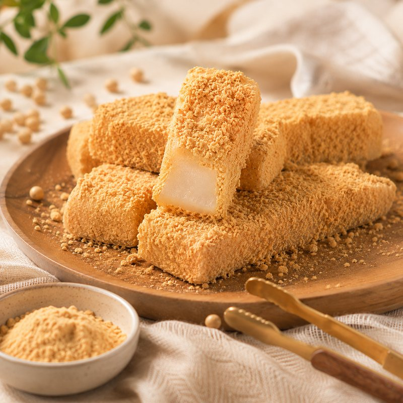
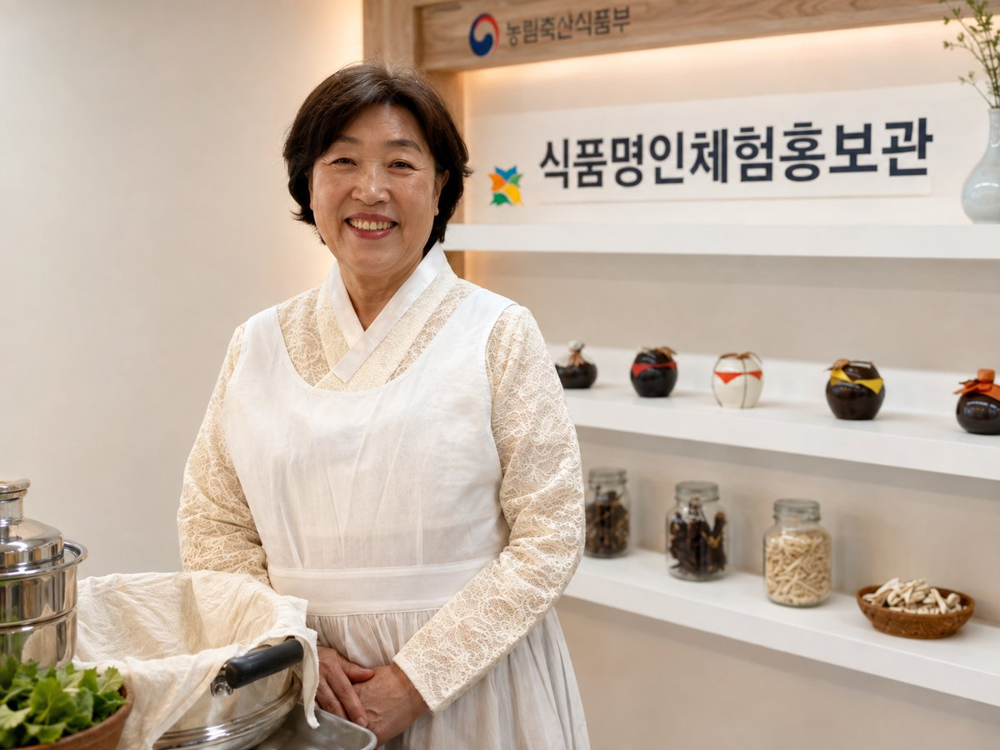

인기대한민국이 인정한 떡의 명인 🏆
3대째 이어온 전통 떡 제조 기술

이연순 명인은 3대째 이어온 전통 떡 제조 기술을 바탕으로, 제천 지역의 청정 한방 원료를 활용한 독창적인 떡을 만들어 왔습니다. 2013년 대한민국 식품명인 제52호로 지정된 이후 국내외 전시·강의를 통해 한국 전통 떡 문화의 보존과 계승에 앞장서고 있습니다.
- 제52호대한민국 식품명인
- 20년+전통음식 강의
- 4개국해외 전시 참가
자격 · 학력
2013
대한민국 식품명인 제52호농림축산식품부
2022
떡제조기능사한국산업인력공단
1999
한식조리기능사한국산업인력공단
2013
명지대학교 산업대학원 식품양생학 졸업전통음식 전공
2010
한국전통음식연구소 부설 평생교육원 식품조리학사
주요 수상
2025
산업포장대통령
2025
한국농어촌공사 사장 표창
2023
대한민국 한류대상국회문화체육관광위원장
2019
신지식농업인 지정농림축산식품부장관
2018
국가평생학습대상 특별상국회교육위원장
2015
한국음식관광박람회 한국음식경연 평통의장상민주평화통일자문회의 의장
2013
한식세계화 외식산업유공 표창농림축산식품부장관
2007
서울국제요리경연대회 대상 (궁중음식)문화관광부장관
전체 이력 보기 — 강의 · 전시 · 수상
주요 강의 경력
2006~한국전통음식연구소 · 향토음식개발연구원 전통음식 강의
2013~제천시 · 평창군 평생학습센터 전통음식
2014수원과학대학교 전통음식
2011~19영월군 농업기술센터 · 다문화센터 전통음식
2017강원도 특산 음식개발 교육 (체험 전통음식)
국내외 전시 · 컨설팅
2017스위스문화원 한식 홍보 전시 참여
2016한국의 떡 전시회 참가중국 청도
2015인도 한식문화페스티벌 전시·교육 참가뉴델리
2006타이페이 식품박람회 전시TAIPEI Center
2011~경기도 · 강원도 · 제천시 · 단양군 등 전국 다수 도시 음식 컨설팅
그 밖의 수상
2021여성기업 유공자 표창충북지방중소벤처기업청장
2018일생의례 전시경연대회 대상농림축산식품부장관
2013한국음식박람회 한국음식 전시경연 대상농림축산식품부장관
2006서울국제요리경연대회 금상한국음식관광협회장